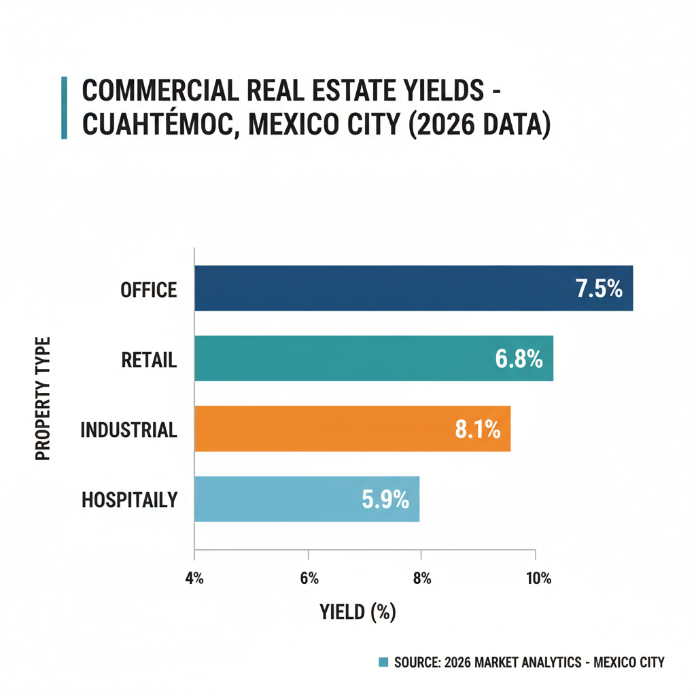

Architectural Guide 2026
Cuauhtémoc: Where History Meets Hyper-Modernity
Step into Cuauhtémoc, a neighborhood meticulously engineered for the discerning global resident. We transform architectural heritage into ultra-high-net-worth 'lifestyle' assets, marrying precise 2026 technical specifications with the timeless elegance of central Mexico City.
The Enduring Legacy of the 'Rios'
Cuauhtémoc, named after the last Aztec emperor, has solidified its position by early 2026 as the preeminent destination for institutional capital and ultra-high-net-worth international residents. Situated at the very heart of Mexico City's central business district, bordering the iconic Paseo de la Reforma, this neighborhood epitomizes the city's 'two-speed' property market. While broader urban growth remains moderate, the Cuauhtémoc-Juárez-Roma corridor exhibits unparalleled resilience, driven by a strategic decoupling of prices from local income and a significant reliance on international demand. Its 19th-century urban plan, characterized by the grid of 'Rio' named streets such as Río Tiber, Río Nazas, and Río Guadalquivir, initially dictated stately Porfirian estates. Today, these same thoroughfares now serve as critical arteries for modern professional mobility and cultural immersion, seamlessly blending their historical integrity with a dynamic 2026 reality.
Architecting Autonomy: A Precision Approach
The financial architecture of Cuauhtémoc in 2026 is defined by a distinct 'spillover effect' from adjacent saturated zones like Polanco and Condesa. Demand is overwhelmingly focused on 'Lifestyle' properties—assets that meticulously integrate historical architectural integrity with cutting-edge technological infrastructure, particularly in soundproofing and water security. Renovated apartments here command between MXN 75,000 and MXN 110,000 per square meter, significantly outpacing the citywide average of MXN 58,000. Projected 5-year total returns for well-executed lifestyle assets are estimated at 45% to 65%, driven by 25-35% nominal capital appreciation and an annual rental yield of 4-5.5%. This segment's resilience is anchored in 'psychological arbitrage,' offering global-standard amenities in a historical district at a price point 60-70% lower than comparable neighborhoods in London or New York.
Geotechnical Realities: Building on History's Depths
The foundational reality of Cuauhtémoc is its location within Seismic Zone III (Lakebed / Soft Soil). This means deep deposits of highly compressible clay and silt, which inherently amplify seismic waves. The 2023 update to the Building Code (NTC-DCCDF) rigorously mandates deep foundations—piles or 'pilotes'—that must anchor into the firm 'hard layer' found typically 26 to 44 meters below the surface. These specialized engineering requirements ensure structural resilience, but they also contribute 15-25% to the total shell construction budget compared to projects in Zone I.
Our approach to navigating this geotechnical challenge involves meticulous Mecánica de Suelos studies and the oversight of a highly experienced Director Responsable de Obra (DRO). We bridge the gap between rigorous US NCARB/AIA engineering standards and local construction practices. By utilizing a transparent 'Cost-Plus' model with reputable General Contractors, we eliminate the infamous 'Gringo Tax'—where unmediated foreign investors might see markups of 200-500% on labor costs—ensuring fair market rates for specialized foundation work and skilled maistro labor.
The Guardians of Urban Heritage: Navigating INAH & INBAL
Cuauhtémoc is a highly protected zone, with a significant density of 'Catalogued' properties. Structures built pre-1900 fall under the jurisdiction of INAH (Instituto Nacional de Antropología e Historia), while 20th-century architectural heritage is governed by INBAL (Instituto Nacional de Bellas Artes y Literatura). Streets such as Río Tiber, Río Nazas, Río Poo, and Río Balsas are specifically identified in historical construction manifests as having a high density of these architecturally protected assets. Any development or major renovation on these thoroughfares requires a mandatory 'Visto Bueno' (Approval) from INAH or INBAL before the Alcaldía will issue a construction permit.
These conservation authorities impose stringent aesthetic constraints to preserve the 'Paramento Urbano' (Urban Facade). This means adherence to approved historical color palettes, often limited to specific earth tones. Modern PVC or aluminum window frames are frequently rejected for front facades in favor of original-style wood or specialized steel profiles. Furthermore, any roof gardens or additional stories must be strategically set back from the primary facade to maintain the street-level volumetric integrity. Our expertise lies in seamlessly integrating 2026 luxury standards while meticulously complying with these 'Heritage Hurdles,' ensuring your project avoids costly 'Clausura' (site sealing) enforcement and instead receives the coveted Certificado de Seguridad Estructural.
Engineering Water Security: The Cutzamala Protocol
Mexico City's water security remains a critical long-term consideration. The Sistema Cutzamala, responsible for 20% of the city's water, underwent its first major upgrade in 40 years during 2025-2026, a significant investment exceeding 680 million pesos. Despite reaching a five-year high in storage levels in late 2025, Cuauhtémoc remains classified as 'water-stressed.' The architectural standard for a mid-sized residential unit (100-200 m²) in 2026 mandates a minimum 10,000-liter cistern capacity, providing 3-5 days of autonomy. For institutional-grade apartment buildings, collective storage of 50,000 liters or more is advised. Given that residents in affluent areas can consume up to 600 liters per day, integrating oversized cisterns and advanced rainwater harvesting (RWH) systems is not merely an amenity—it is an essential 'Supply Autonomy' component, commanding a premium for its ability to mitigate primary anxieties associated with urban living in Mexico City.
Architectural Feasibility: Cuauhtemoc 2026
| Project Type | Avg. Permit Time | Seismic Risk Level | Conservation Status |
|---|---|---|---|
| Renovated 'Lifestyle' Apartment (Catalogued) | 12 - 18 Months | Moderate (INAH/INBAL) | High-Value Asset |
| New Build (H/3/20 Zoning) | 18 - 24 Months | High (Zone III Foundations) | Strict Regulatory Path |
| Structural Retrofit & Modernization of Heritage Shell | 18 - 30 Months | Very High (INAH/INBAL & Zone III) | Deep Value / Trophy Asset |
Specialized Renovations: Beyond the Facade
Our renovations in Cuauhtémoc embody Invisible Modernization. We preserve the original charm—the intricate ironwork, the stately proportions—while integrating 2026 infrastructure. This includes institutional-grade soundproofing with asymmetrical laminated glass and PVC window frames (like Euroventyc) to achieve STC ratings of 40+, effectively mitigating urban noise from gaseros, sirens, and nightlife. Internally, we deploy 'Sound Delete' panels and mass-loaded vinyl (MLV) in wall cavities and floors to create serene interiors, even for home offices in the dense urban core. For power stability, all high-spec projects now incorporate dedicated voltage regulators and Uninterruptible Power Supply (UPS) systems, ensuring seamless digital connectivity (supported by CFE's gigabit fiber optic network) in an evolving grid.
High-End Interior Design: A Refined Sanctuary
Our interior design philosophy for Cuauhtémoc is one of understated luxury and resilience. We craft spaces that reflect a global sensibility while remaining deeply rooted in Mexico City. Sourcing local materials such as exquisite cantera stone, hand-troweled chukum plaster, and bespoke cabinetry, we create interiors that are both visually stunning and profoundly functional. Every detail, from sophisticated lighting schemes designed to enhance natural light in deeper floor plans to integrated 'Sound Shadow' sound masking systems in private studies, is calibrated to offer an unparalleled living experience. The goal is to provide a sanctuary where productivity meets tranquility, tailored for the elite international resident who demands uncompromising performance and aesthetic integrity.
The Cuauhtemoc Cheat Sheet
- Best Streets Rio Tiber, Rio Nazas, Rio Guadalquivir
- Zoning Code H/3/20, HM, HC
- Est. Cost / m² MXN 75,000 - 110,000 per m² (Renovated)
- Best Coffee Avenida Reforma's boutique coffee shops
- Local Quirk Highest Walk Score coupled with extreme parking scarcity; a deeded parking space can add 10-15% to property value.
The Challenge
The primary challenge in Cuauhtémoc is balancing its deep cultural heritage and a desire for modern, open luxury within the formidable constraints of Seismic Zone III lakebed soil and strict INAH/INBAL conservation mandates.
Navigating the bureaucratic labyrinth of a 'Manifestación de Construcción' (Construction Manifestation) can extend timelines significantly, particularly with the mandated 'Publicitación Vecinal' (Neighbor Notification) process. The DRO (Director Responsable de Obra) carries significant personal legal liability for every structural and code compliance detail, making their selection paramount.
Our Solution
We specialize in 'Resilient Architecture'—projects that integrate advanced seismic retrofitting, self-sufficient water solutions, solar backup systems, and institutional-grade acoustic treatments. Properties with documented Certificado de Seguridad Estructural and 'Supply Autonomy' (independent water/power for 7+ days) command substantial premiums, mitigating the inherent systemic risks of Mexico City living.
Our strategy hinges on engaging only 'Prestigious Notarios' and highly experienced, specialized DROs. This professional network, coupled with transparent 'Cost-Plus' project management, eliminates the 'Gringo Tax' and streamlines the permit process, transforming potential delays into predictable progress. We secure legal certainty, allowing our clients to capitalize on Cuauhtémoc's unique blend of historical gravitas and future-forward urbanism.
Planning to Buy?
Don't sign a contract before a technical audit. We offer pre-purchase structural assessments in Cuauhtemoc.
2026 Cost Report
Get our detailed breakdown of current labor and material costs for luxury residential in CDMX.
Start Your Cuauhtemoc Legacy
NYC Precision. Mexican Craft. We eliminate uncertainty for international investors.